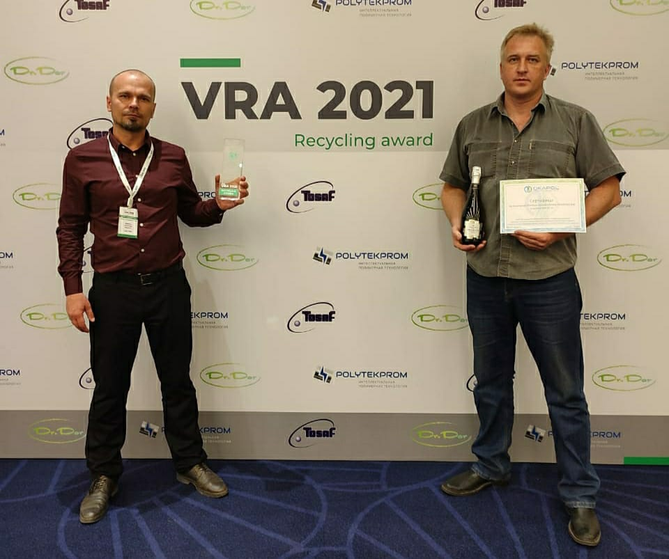

С 22 по 23 мая в Санкт – Петербурге проходила Первая всероссийская премия по переработке пластика.
Организатор Премии ООО «ВторПрайс».
ВторПрайс – первое в России агентство по продажам вторичных ресурсов.
В Санкт – Петербург съехались представители перерабатывающей отрасли и потребители вторичного сырья. Специалисты в области экологического консалтинга и аналитики рынка рассказывали о рынке вторсырья в России, международных тенденциях и экологии, о технологиях работы со «вторичкой» на многослойном экструдере. Участники узнали все о пленочном производстве и о необходимом качестве. Один из самых опытных и известных технологов в полимерной индустрии поделился знаниями о методах оценки качества "вторички", об улучшение её свойств. И еще было много различных обсуждений и обмена опытом.

Наш Тверской Завод Вторичных Полимеров представляли Александр Щавелев – руководитель Коммерческого отдела и Сергей Лебедев – директор по развитию.
Конкурс «Переработчик пластика» - 100+ участников, 10 финалистов, 3 победителя.
Критерии оценки номинантов были следующие:
Объем перерабатываемой продукции
Качество перерабатываемого сырья
Количество приемных фракций
Работа с не приемными (сложными) фракциями
Количество лет на рынке
Глубина Переработки
Наличие Лицензии
Наличие ТУ на продукцию (Паспорт)
Наш завод получил премию "Лучший переработчик пластика в России"!